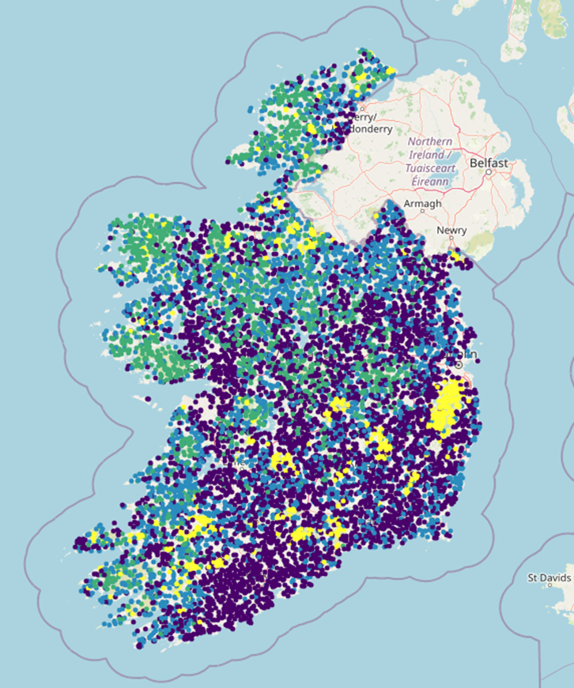
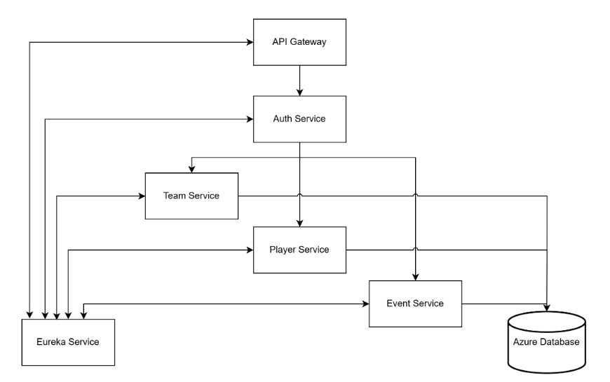

I’m a final year Computer Systems (BSc) student at the University of Limerick, currently averaging a 3.77 QCA with 17 A grades across 19 advanced modules. I have a strong technical foundation in software engineering, with particular focus in the areas of machine learning and data analytics. During my internship with Intel’s Cloud Native team, I gained hands-on experience in modern development practices, CI/CD pipelines, and high-quality code delivery in a production environment. This experience significantly enhanced my skills in scalable system design and collaboration within engineering teams. My Final Year Project, a GIS-based flood risk classifier using unsupervised machine learning, was awarded Most Innovative Project by Jaguar Land Rover. I also represented UL at HackUPC 2025 in Barcelona, where I collaborated on a high-impact hackathon challenge with international teams. I’m extremely driven, quick to learn, and passionate about applying technology to solve real-world problems.
Contributed towards the Intent Driven Orchestration Planner which is mainly written in Go.
Worked on the Kubernetes Power Manager and wrote unit tests used in release.
Developed and maintained Jenkins CI/CD pipelines used in Intel Shannon for GitHub push conformance.
Certified by Intel for Software Quality Awareness.
Key software developer working on Release 0.3.0 of the Intel Intent Driven Orchestration, linked here.
Led the end-to-end development of feature requirements for the Orchestration Planner.
Ensured secure, production-quality code through code reviews and adherence to Intel Release Requirements.
Year 4 (2024–2025) – Overall 3.7 QCA
A1: Neural Computing, Advanced Programming Concepts
A2: Big Data Management and Security
Year 3 (2023–2024) – Overall 3.84 QCA
A1: Machine Learning: Methods and Applications, Software Development Project, Project Management and Practice
A2: Mobile Application Development, Professional Issues in Computing
Year 2 (2022–2023) – Overall 3.76 QCA
A1: Software Testing and Inspection, Database Systems, Intelligent Systems, Event Driven Programming, Data Structures and Algorithms
A2: Object Oriented Development, Operating Systems, Software Requirements, Modelling and Computer Graphics
Year 1 (2021–2022) – Overall 3.68 QCA

This project, completed as my Final Year Project at the University of Limerick, was awarded the Most Innovative Project by Jaguar Land Rover. It is a GIS-based flood risk assessment tool that leverages unsupervised machine learning to classify agricultural fields across Ireland based on their vulnerability to waterlogging. The system integrates environmental datasets—including soil type, elevation, and rainfall patterns—to generate spatial flood risk predictions. Using an interactive Mapbox interface, it also supports generalisation by predicting waterlogging risk for previously unseen locations across the country.
View Project
A high-availability, microservices-based application for managing events, teams, and players for sports clubs. Built with Spring Boot and Vue.js, the system includes six decoupled services communicating via REST and Feign clients. Dockerised for scalability and fault tolerance, it uses Eureka for service discovery, an API Gateway for routing, and Google OAuth for secure sign-in. CI/CD is handled through GitHub Actions, with full unit test coverage and load testing via JMeter. The app is deployed on a DigitalOcean VPS and uses Microsoft Azure for database hosting with geo-replication.
View Project